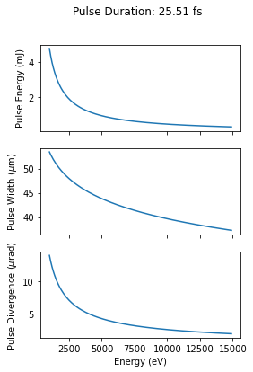

Tutorial: Using phenom to Model Shot-to-Shot the European XFEL¶
Our objective here is to generate pulses whose properties pertain analytical expressions of some other beam properties.
In doing so, we may reduce the number of variables that needs to be parsed to our source model.
An Emipirical Model of SA1 Undulator at the European XFEL¶
We make use analytical expressions of pulse properties at the SA1 undulator of the European XFEL, which obtains the following parameters as a function of photon energy and electron beam charge:
Pulse energy in Joules
Pulse duration in seconds
Pulse width in m
Pulse Divergence in rad.
The analytical expressions are provided below:
[1]:
import numpy as np
import scipy.constants
h = scipy.constants.physical_constants['Planck constant in eV s'][0]
def analytical_pulse_energy(q, photon_energy):
"""
Estimate of analytical_pulse_energy from electron bunch charge and radiation energy
:param q: electron bunch charge [nC]
:param photon_energy: radiation energy [eV]
:return P: pulse energy [J]
"""
P = 19*q/photon_energy
return P
def analytical_pulse_duration(q):
"""
Estimate analytical_pulse_duration from electron bunch charge
:param q: electron bunch charge [nC]
:return t: Duration of pulse [s]
"""
t = (q*1e3)/9.8
return t*1e-15
def analytical_pulse_width(photon_energy):
"""
Estimate analytical_pulse_width (FWHM) from radiation energy (assumes symmetrical beam)
:param photon_energy: radiation energy [eV]
:return sig: Radiation pulse width [m]
"""
sig = np.log((7.4e03/(photon_energy/1e03)))*6
return sig/1e6
def analytical_pulse_divergence(photon_energy):
"""
Estimate of analytical_pulse_divergence (half-angle) from electron bunch charge and radiation energy
:param q: electron bunch charge [nC]
:param photon_energy: radiation energy [eV]
:return dtheta: pulse divergence [rad]
"""
return ((14.1)/((photon_energy/1e03)**0.75)) / 1e06
[2]:
from matplotlib import pyplot as plt
energies = np.arange(1,15,0.1)*1e3 ### photon energies
q = 0.250 ### 250 pC bunch charge
fig, [ax1,ax2,ax3] = plt.subplots(3,1, figsize = (4,6), sharex = True)
duration = analytical_pulse_duration(q = 0.250)
fig.suptitle("Pulse Duration: {:.2f} fs".format(duration * 1e15))
pulse_energy = analytical_pulse_energy(q = q, photon_energy = energies)
ax1.plot(energies, pulse_energy * 1e3)
ax1.set_ylabel("Pulse Energy (mJ)")
pulse_width = analytical_pulse_width(photon_energy = energies)
ax2.plot(energies, pulse_width * 1e6)
ax2.set_ylabel("Pulse Width ($\mu$m)")
pulse_div = analytical_pulse_divergence(photon_energy = energies)
ax3.plot(energies, analytical_pulse_divergence(photon_energy = energies) * 1e6)
ax3.set_xlabel("Energy (eV)")
ax3.set_ylabel("Pulse Divergence ($\mu$rad)")
[2]:
Text(0, 0.5, 'Pulse Divergence ($\\mu$rad)')

A Custom SASE Source¶
We can use this model to generate pulses under a standard operating condition of the SPB/SFX instrument:
[3]:
from phenom.source import SASE_Source
## define the operating conditions
photon_energy = 10e03
beam_charge = 0.250 # nC
## wrap sase
def SA1_Source(photon_energy,
beam_charge,
nr = 512,
nt = 512,
bandwidth = 1e-12,
x0 = 0.0,
y0 = 0.0,
t0 = 0.0,
theta_x = 0.0,
theta_y = 0.0):
duration = analytical_pulse_duration(q = beam_charge)
pulse_energy = analytical_pulse_energy(q = beam_charge, photon_energy = photon_energy)
pulse_width = analytical_pulse_width(photon_energy = photon_energy)
pulse_div = analytical_pulse_divergence(photon_energy = photon_energy)
x = y = np.linspace(-pulse_width*4, pulse_width*4, nr)
t = np.linspace(-duration*1.5, duration*1.5, nt)
if type(pulse_width) == np.float64:
pulse_width = float(pulse_width)
## define the pulse
src = SASE_Source(x = x,
y = y,
t = t,
photon_energy = photon_energy,
pulse_energy = pulse_energy,
pulse_duration = duration,
bandwidth = bandwidth,
sigma = pulse_width,
div = pulse_div,
x0 = x0,
y0 = y0,
t0 = t0,
theta_x = theta_x,
theta_y = theta_y
)
return src
It is then convenient to execute our wrapped function:
[4]:
save_loc = "./sase_field.h5"
src = SA1_Source(photon_energy = 10e3, beam_charge = 0.250, nt = 252)
src.generate_pulses(save_loc)
[5]:
import h5py as h5
with h5.File(save_loc, mode = 'r') as hf:
x = sase_pulse = hf['pulse000']['mesh']['x'][()]
y = sase_pulse = hf['pulse000']['mesh']['y'][()]
t = sase_pulse = hf['pulse000']['mesh']['t'][()]
sase_pulse = hf['pulse000']['data'][()]
from matplotlib import pyplot as plt
fig, [ax1, ax2] = plt.subplots(1,2, figsize = (9,3))
### spatial intensity
im = ax1.imshow((abs(sase_pulse)**2).sum(axis = 2),
extent = [x.min() * 1e06,
x.max() * 1e06,
y.min() * 1e06,
y.max() * 1e06],
cmap = 'bone'
)
plt.colorbar(im, label = "Intensity (W/mm$^2$)")
ax1.set_xlabel('x ($\mu$m)')
ax1.set_ylabel('y ($\mu$m)')
ax2.plot(t*1e15, (abs(sase_pulse)**2).sum(axis = (0,1)))
ax2.set_xlabel("Time (fs)")
/var/folders/r5/xp94p76n08l4hvjctdh74hl00000gn/T/ipykernel_5224/2998508477.py:24: MatplotlibDeprecationWarning: Starting from Matplotlib 3.6, colorbar() will steal space from the mappable's axes, rather than from the current axes, to place the colorbar. To silence this warning, explicitly pass the 'ax' argument to colorbar().
plt.colorbar(im, label = "Intensity (W/mm$^2$)")
[5]:
Text(0.5, 0, 'Time (fs)')

We can similarly pass a list of photon_energies:
[ ]:
save_loc = "./sase_field.h5"
energies = np.arange(10,15)*1e3
src = SA1_Source(photon_energy = energies, beam_charge = 0.250, nt = 250)
src.generate_pulses(save_loc)
[ ]:
fig, ax = plt.subplots(1,5, figsize = (10,2))
ax = ax.flatten()
with h5.File(save_loc, mode = 'r') as hf:
for itr, key in enumerate(hf.keys()):
ax[itr].set_xticks([])
ax[itr].set_yticks([])
sase_pulse = hf[key]['data'][()]
ax[itr].imshow((abs(sase_pulse)**2).sum(axis = 2),
cmap = 'bone'
)
photon_energy = hf[key]['params']['photon_energy'][()]
ax[itr].set_title("Photon Energy:\n{:.2e} eV".format(photon_energy*1e3))